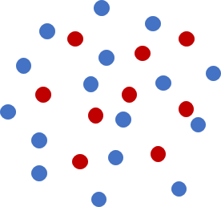

Design Principle
Portage is a framework for creating custom remappers from interoperable components and not a monolithic, catch-all remapping library. It is designed such that its major components can be mixed and matched as necessary as long as they adhere to an interface. Its design also seeks to minimize the amount of mesh and field data that must be copied from clients in order to minimize data movement.

In order to enable this DIY design, Portage requires the remap driver to be templated on all its component classes implementing the necessary methods. It also requires the driver to be templated on the mesh and state managers for the source and target respectively. The individual components are also templated on the mesh and state managers in turn. Each component is required to be designed as a functor, or in other words, a struct/class with an operator()(...) that is functional, i.e. has no side effects.
The functional design allows a remap driver to be written such that populating the fields on target entities is a nearly embarrassingly parallel process on-node. Remapping on distributed meshes/swarms is also embarrassingly parallel as long as the target and source partitioning is geometrically matching. On the other hand, if there is a geometric mismatch of the partitioning on the source and target, i.e., source entities overlapping a target entity are on a different node, Portage performs some communication and data movement in order to get source mesh cells onto partitions needing them. Once this step is concluded at the outset, the remap still shows excellent scaling. More details are given in the High Level Concepts of Data Distribution During Parallel Remap section and performance plots are shown in the scaling section.
Drivers and Applications
Portage does come with some full-featured drivers that can be directly used to deploy a powerful remapping capability into an application. In particular, the following drivers are provided:
- Portage::MMDriver - for single- and multi-material mesh-mesh remap.
- Portage::swarm::SwarmDriver - for particle-particle remap.
- Portage::MSM_Driver - for mesh-mesh remap with particles as an intermediary.
These drivers are all used within some example applications within the apps directory to illustrate how the drivers can be used with a mix of components. The applications choose a particular mesh or particle swarm type, select component classes for the remapping steps along with associated settings for the remap process. The drivers, apps and the regression tests included with the apps are all fairly comprehensive and exercise all functionality of the Portage framework. Therefore, the included drivers and some of the apps can be used as-is if they meet all the needs of a particular application.
Mesh/Particle and State data
The remapping problem starts with a source mesh (or particle swarm) with field data and a target mesh (or particle swarm) onto which the data must be remapped. For meshes, the field data can live on cell centers or on nodes; particle data naturally lives on particles which can have various shapes and smoothing lengths.
All of Portage's components work directly (to the extent possible - see High Level Concepts of Data Distribution During Parallel Remap) with an application's mesh/particle data and field data respectively. Portage accesses this data through mesh (or swarm) and state wrapper classes that provide an interface to the queries needed to perform any particular step. For an illustration of the use of the wrappers in Portage, see the Example Use page. More details about the requirements of mesh and state wrappers are given in the documentation of the support package, Wonton.
Single Material Mesh-Mesh Remapping
The remapping algorithm within Portage for single material problems between two meshes [1][2] is divided into four phases (described here for cell-based fields):
- search - find candidate source cells that will contribute to remap of each target cell
- intersect - calculate the weight of each candidate's contribution to the remap of a given target cell
- interpolate - using the weights and source field data reconstruct the field data for each target cell
- repair - repair the remapped field due to errors resulting from mismatch of the two mesh boundaries
| A mesh-mesh configuration. Blue is target mesh, black is source mesh. | Candidates are in yellow. | The exact intersectiion volumes are in green. | The intersection weights are combined to interpolate data in the target cell. |
The schematic above shows the algorithm when each target cell has access to all source cells that overlap it. As mentioned above, an initial source redistribution step (see High Level Concepts of Data Distribution During Parallel Remap) must be executed if the source and target mesh partitions are not geometrically aligned.
Search
Given source and target entities, this step simply identifies which source mesh entities might contribute to each target mesh entity. Concretely, for exact intersection based remap of cell fields, this step identifies which source cells potentially overlap each target cell.
Portage makes available the following search algorithms with varying degrees of sophistication/speed:
- Portage::SearchSimple - 2d, bounding box search
- Portage::SearchKDTree - 2d or 3d, k-d tree search (not a true parallel k-d tree)
Application developers may use their own search algorithms (like a quadtree or hashed octree algorithm).
Intersect
This step calculates the contribution weights from the candidate source cells to a target cell. Portage currently uses exact intersection methods to calculate various moments of the polygon/polyhedron of intersection. First order accurate remap needs only the 0th moments (area/volume) of intersection but second order remap requires the 1st moments (effectively, the centroids of the intersection polyhedra).
The available intersectors for meshes in Portage are:
- Portage::IntersectClipper - 2d, exact intersection method based on the Clipper library for polygon intersection and clipping (Unit tested in Portage but not used widely in the App tests)
- Portage::IntersectR2D - 2d, fast, exact polygonal intersection method based on the r3d library.
- Portage::IntersectR3D - 3d, fast, exact polyhedral intersection method based on the r3d library.
The R2D/R3D-based intersectors in Portage are capable of intersecting two non-convex cells based on the ability of R2D/R3D to clip non-convex polygons/polyhedra. Therefore, in Portage's intersectors source mesh cells are left as is regardless of whether they are convex or non-convex but target cells are decomposed into simplices and the simplices intersected with the source cells (unless they are explicitly told that the target cells are strictly convex). The simplices are derived from the side/wedge data structures built by Wonton::AuxMeshTopology class. Note that Portage considers hexahedral cells (or any higher polyhedra) with curved faces also as non-convex. When remapping multi-material fields, a source mesh should consist of at least star-convex cells. General non-convex cells would require a different simplex decomposition method in Wonton::AuxMeshTopology class.
Applications can choose to supply their own exact cell-cell intersectors or even an alternate algorithm such as the swept face calculation of contributions from source to target cells sometimes used in Arbitrary-Lagrangian-Eulerian methods.
Interpolate
Given the source field data, along with the list of source cells and their contribution weights to each target cell, the interpolate step actually populates the field on the target cells. The first order accurate interpolation is simply a weighted sum of the source field values, where the weights are the intersection volumes of the target cells with the source mesh. For second order accurate interpolation, a local linear reconstruction of the source field based on a least squares gradient is used to compute more accurate contributions to the target cell. Local bounds preservation may be enforced using limited gradients (see Portage::Limiter_type) - this ensures that the remapped value in any target cell will be bounded by the cell values of any intersecting source cells and their immediate neighbors. At domain boundaries, however, limiting can be ill-posed if there are no boundary conditions; we currently do not support such boundary conditions, so we do not limit at domain boundaries. The linear reconstruction requires knowledge of the first moments or centroids of the intersection volumes.
The current interpolation methods for meshes are the following:
- Portage::Interpolate_1stOrder - 1st order accurate, reproduces a constant field.
- Portage::Interpolate_2ndOrder - 2nd order accurate, reproduces a linear field.
As with search and intersect components, applications can furnish their custom interpolation methods.
For remapping node fields, Portage uses the dual cells of the mesh to perform the remapping steps. Note that the use of 2nd order interpolation to node fields is not guaranteed to preserve linear fields or give second order accurate results. This is because for the method to be second-order accurate the linear reconstruction in the source cell (or dual cell) is with respect to the field value at its centroid; for the dual mesh, however, the field values are known at the nodes, not necessarily the centroids of the dual cells. Also, dual cells in a general mesh are almost guaranteed to be non-convex. Therefore, intersection of dual cells always includes a decomposition of the target dual cell into simplices based on wedges/corners in Wonton::AuxMeshTopology.
Portage currently does not have an algorithm in place for remapping nodal fields to cells and vice-versa although a driver to do such a thing can be written easily.
Mismatch Fixup or Repair
Often, the boundaries of the source and target meshes in simulations do not exactly match up. This may happen because curved boundaries are discretized with different resolutions in the two meshes or because two physics packages view the geometry of the domain a bit differently. If all of the source mesh is not covered by the target mesh or vice versa, the result may violate conservation or introduce artifacts in the fields. Therefore, in this step the field is repaired by one of several methods as described in the MismatchFixup" section. The options for handling fully empty cells are in the enum Portage::Empty_fixup_type and the options for repair of partially covered cells are in the enum Portage::Partial_fixup_type.
Multi-material remapping
Portage is also capable of remapping fields for a sparse multi-material problem, one in which the source mesh has cells possibly containing more than one material but not all materials occur in every cell [3]. The materials in each cell are specified by their volume fractions and optionally, by their centroids. Each multi-material field on the source mesh has as many values in a cell as there are materials in the cell. Multi-material remapping cannot be used with particle swarms nor does it make sense for nodal field remap.
The algorithm for multi-material remapping involves the use of an external interface reconstruction package called Tangram to perform reconstruction of pure material polygons within each cell using the volume fraction (and possibly centroid) data. Tangram is designed similar to Portage in that one can use it with default or custom components. It has within its suite of methods Volume-of-fluid and Moment-of-fluid methods.
The algorithm for remapping of multi-material fields is broadly similar to the single material remap but now the intersection and interpolation must be done per material. Thus the algorithm can be roughly described as below:
- search - find candidate cells that will contribute to each target cell
- interface reconstruct - given volume fractions of materials (and optionally, centroids) on the source mesh, compute a subdivision of each source cell into pure material polygons
- For each material m in problem:
- intersect - calculate the contribution of material m from each candidate cell to a given target cell. This is done by intersecting the material m's reconstructed polygon (if it exists) in the source cell with the target cell
- populate materials - based on intersection moments, determine the cells in which this material appears
- interpolate - using the intersection weights and moments, along with appropriate limiters, reconstruct the field data for material m for a given target cell. No limiting is performed at material interfaces
- repair - repair the remapped field due to errors resulting from mismatch of the two mesh boundaries (not yet implemented)
Remap of mesh fields on cells and nodes (one value per cell or node) proceeds as in the single material case.
The above steps describe what is called a material-dominant loop - the outer loop is over materials and within each iteration all cells containing this material are processed. Also note that, for a particular field, the interpolate step requests a contiguous field data corresponding to all cells in a particular material (See Wonton documentation for details of the programming interface).
We recognize that not all applications store their fields in the same way. A few store field data in a full data structure wherein field values are stored for every material in the problem in every cell. Most applications store this data compactly in cell-centric or material-centric representations. In the cell-centric form, each cell keeps track of which materials it has and the field values corresponding to those materials. On the other hand, material-centric data representations maintain lists of cells that contain a particular material (or put another way, the cells that a material contains) and track the field values of the material cells. These differences have strong implications for which loops (cell-dominant or material-dominant) work best for each storage pattern.
Based on a study [4] of multi-material data structures, the Portage team has concluded that a material dominant loop for remapping is likely to be more cache-friendly and therefore, more performant since this is a memory bound algorithm. The team also has designed the state wrappers to retrieve data in a material-centric way, based on the same study's conclusion that accessing cell-centric data in material-dominant loops and vice versa is highly detrimental to performance. Therefore, we recommend that the field data be transformed, if necessary, within the state wrapper to a material-centric form before remapping and believe that the cost of this transformation will be less than that of accessing the data in an inefficient way.
Swept-face approximate remapping
In addition to the remap using mesh-mesh intersections, Portage offers an approximate method [1] to calculate contribution weights from the candidate source cells. This method is called swept-face method, because the mesh-mesh intersections are replaced by simple regions defined by the displacement of faces between a source mesh and a target mesh. Therefore, this method requires that both meshes have the same topology and only small nodal displacement.
Single material remap

Following four phases described earlier, namely: search, intersect, interpolate and repair, the main difference lies inside the intersect phase. The swept-face intersect algorithm can be summarized as:
- For each face f of a computational cell c, create a swept-face polygon/polyhedron and calculate its signed volume. Note that the polygon can be self-intersecting.
- Based on the sign of the volume, assign this volume (and higher moments) either to the cell c or to a neighboring cell which is sharing the face f with the cell c.
- In addition to contributions from the face displacement, the volume of the cell c itself is assigned to the cell c, so that the target data can be expressed as a weighted sum over all these contributions in the same way as for the default exact intersections. Therefore, the interpolate phase is the same as for intersection based remap.
Thanks to the same connectivity of a source mesh and a target mesh, the search phase is trivial. A list of face-neighboring cells is created in this phase. Repair phase is the same as for the default intersection-based remap.
Multi material remap

An example of two swept regions projected into their corresponding face-cell groups for a multi-material remap
Preservation of material volumes requires more sophisticated method for the multi-material swept-face remap. To make use of interface reconstruction in source cells, swept regions are projected into corresponding cells based on their signed volumes. This is done in following steps during the intersect phase:
- Create a polygon/polyhedron p by adding a centroid of a cell c to a face f. This poly defines a face-cell group fc.
- Find a cutting plane in the direction of an effective normal of the face f in such a way that the volume of the poly p under the plane is equal to the the swept volume.
- Cut material polygons associated with a face-cell group fc with the cutting plane to get material volumes (and higher moments) which are assigned to the cell c. Material volumes from the cell itself have to be added to the contribution as described in the single-material case.
Particle or swarm Remapping
Portage can estimate functions and derivatives between particle swarms (groups of particles) employing algorithmic devices similar to those of mesh-mesh remap. We say "estimate" instead of "interpolate" because in general, meshfree function estimates pass near the data, and not through it. swarm remap is performed in the following steps that echo those of mesh-mesh remapping:
- search - find candidate source particles that will contribute to remap at each target particle.
- accumulate - calculate the weight of each candidate's contribution to the remap at a given target particle.
- estimate - using the weights reconstruct the field data for a given target particle.
The following figure illustrates typical source and target swarms used for remapping. There are no lines connecting data points.

|
| A swarm-swarm remap configuration. Blue is source, red is target. |
There are many possible meshfree methods to choose from. Portage currently employs the Kernel Density Estimator (KDE), the basis of the Smooth-Particle Hydrodynamics method (SPH), and the well developed Local Regression Estimator (LRE) [5][6]. If LRE is performed with sufficient point density, one can obtain weights for arbitrary orders of derivatives of the field data enabling higher-order estimation of fields. It can even be used to estimate integral operators of the field data on small domains. It has many exceptional properties that render it useful and practical.
Search
For particle swarms, the search concepts are similar, with one imporant difference. With meshes, the region of influence of a data point is given by the cell that includes or is connected to it. With particles, the region of influence of a data point is determined by the support of a weight function that includes it. A typical weight function is positive, smooth and unimodal, with compact support, as shown below.

|
| A typical weight function. The peak value is typically 1 and the minimum zero, with compact support. |
A weight function support need not be spherical, as illustrated above. Suitable weight functions can be constructed with supports comprised of ellipses, boxes, or arbitrary polygons or polyhedra. A smooth weight function used for particles generalizes the "top-hat" or unitary weight function used for meshes that has a value of 1 inside the cell and 0 outside. Meshes are a special case of particles. In fact, under certain conditions on the weight function, the LRE reproduces finite element nodal shape functions.
The centers of the weight function supports are typically located in two places. If on the target particles, the estimator is called "gather-form", if on the source particles, the estimator is called "scatter-form", illustrated below.

| 
| |
| Gather-form search. The centers of the weight function supports are located at the target particle centers. | Scatter-form search. The centers of the weight function supports are located at the source particle centers. The supports need not all have the same shape. |
The weight function kernel and shape are specified by Portage::MeshFree::Weight::Kernel and Portage::MeshFree::Weight::Geometry.
Any sort of bounding performed, e.g. to partition among processors, needs to take into account the extent of the weight function supports. These are the search methods for particles:
- Portage::SearchSimplePoints - any-d quadratic time search over particle swarms
- Portage::SearchPointsByCells - any-d linear time search over particle swarms using a bounding box containing the particles and their extent based on smoothing lengths
The weight function location is specified by Portage::MeshFree::WeightCenter. A set of input smoothing lengths determine the size of the weight function support.
Accumulate
Most meshfree methods make approximations by means of discrete kernel transforms, which involve summing data values times kernel values at various points. Even though the kernels are defined over the entire swarm, compact support means only a small number of particles typically have non-zero values. The set of such particles is analogous to the stencil used in a meshed method.
For LRE, discrete transforms of different powers of the particle coordinates are made (moments), assembled into a matrix, solved against a vector of moments and finally multiplied by the kernel function. This yields a set of weights for each neighboring particle data value, one for each derivative estimate. The concept for gather and scatter forms applied to the second moment of position is illustrated below.

| 
| |
| Gather-form accumulate. The source data values (blue spikes) multiply the values of a given target kernel (in red) at the location of the spikes and are summed to the value associated with the given red dot. | Scatter-form accumulate. The source data values (blue spikes) multiply the values of the source kernels at the red dots (centers of the target particles) and are summed there. |
The only available meshfree method for accumulate is:
- Portage::swarm::Accumulate - any-d accumulator that works with various weight function shapes, kernel functions, basis functions and estimator models.
Developers may write their own Accumulate class.
Estimate
Given the list of source particles and their weighted contributions to a given target particle, along with source field data, this step actually populates the fields on the target particles. All of the heavy-lifting of the remap for particles has been done in the accumulate phase, such that this step results in a basic matrix vector multiply between the field data on source particles and the weights for the various orders of derivative.
The sole available Estimate method is:
- Portage::swarm::Estimate - use the output of Portage::Accumulate to estimate the target field data with varying degrees of accuracy.
but developers are free to substitute a different one.
Note that while the meshfree interpolation can go to very high order of accuracy it is still not strictly conservative like the mesh-mesh remap. Also, meshfree remapping currently does not incorporate mechanisms for local or global bounds preservation in the interpolation. Consequently, users must be conscious of the fact that going to higher orders of interpolation carries the risk of bounds violation. Furthermore, particle remap is not currently sensitive to multi-material data fields. These difficulties will be addressed in future code releases.
Coordinate Systems
Portage provides the tools to remap in different coordinate systems. Details are given in the coordinate_systems.pdf document.
The coordinates used by Portage are based on ISO 80000-2:2009, and are shown here:

This is a public domain image from Wikimedia Commons and can be found at https://commons.wikimedia.org/wiki/File:Physics_Coordinates.png.
{kind=link}
| variable | meaning |
|---|---|
| x | the first Cartesian coordinate |
| y | the second Cartesian coordinate |
| z | the third Cartesian coordinate |
| r | the distance from the origin (spherical radius) |
| ρ | the distance from the z axis (cylindrical radius) |
| φ | the azimuthal angle (around the z axis, starting at the positive x axis) |
| θ | the angle of declination (descending from the positive z axis) |
The available coordinate systems are
CartesianCoordinates<3>: 3D Cartesian coordinates, (x,y,z); the "basic" right-handed 3D coordinates;CartesianCoordinates<2>: 2D Cartesian coordinates, (x,y); the "basic" 2D coordinates;CartesianCoordinates<1>: 1D Cartesian coordinates, (x); the "basic" 1D coordinates;Cylindrical3DCoordinates: 3D cylindrical coordinates, (ρ, φ, z);CylindricalPolarCoordinates: 2D cylindrical polar coordinates, (ρ, φ); the "usual" polar coordinates;CylindricalAxisymmetricCoordinates: 2D cylindrical axisymmetric coordinates, (ρ,z); implicitly a 3D coordinate system, where the plane of the grid is rotated around the z axis (i.e., no variation with the azimuthal angle φ);CylindricalRadialCoordinates: 1D cylindrical radial coordinates, (ρ); implicitly a 2D coordinate system, where quantities depend only on their 2D distance from the origin ρ, not on the azimuthal angle φ;Spherical3DCoordinates: 3D spherical coordinates, (r,θ,φ);SphericalRadialCoordinates: 1D spherical radial coordinates, (r); implicitly a 3D coordinate system, where there is no variation with either the azimuthal angle φ or declination angle θ, but only the 3D distance from the origin r.
Additional coordinate systems can be implemented, following the model of the existing coordinate systems.
It is currently assumed that both the target and source meshes are using the same coordinate system.
Not all components of Portage are available with non-Cartesian coordinate systems. Look for a template for the coordinate system to be certain that a given component of Portage is designed to work with non-Cartesian coordinate systems.
[1] Margolin, L.G. and Shashkov, M.J. "Second-order sign-preserving conservative interpolation (remapping) on general grids," Journal of Computational Physics, v 184, n 1, pp. 266-298, 2003.
[2] Dukowicz, J.K. and Kodis, J.W. "Accurate Conservative Remapping (Rezoning) for Arbitrary Lagrangian-Eulerian Computations," SIAM Journal on Scientific and Statistical Computing, Vol. 8, No. 3, pp. 305-321, 1987.
[3] Kucharik, M. and Shashkov, M.J. "Conservative Multi-Material Remap for Staggered Multi-Material Arbitrary Lagrangian-Eulerian Methods," Journal of Computational Physics, v 258, pp. 268-304, 2014.
[4] Fogerty, S., Martineau, M., Garimella, R.V. and Robey, R.W. "A Comparative Study of Multi-Material Data Structures for Computational Physics Applications," Computers and Mathematics with Applications, 2018.
[5] Dilts, G.A. "Estimation of Integral Operators on Random Data," Los Alamos Technical Report, LA-UR-17-23408, Los Alamos National Laboratory, Los Alamos, NM 2017.
[6] Garimella, R.V. "A Simple Introduction to Moving Least Squares and Local Regression Estimation," Los Alamos Technical Report, LA-UR-17-24975, Los Alamos National Laboratory, Los Alamos, NM 2017.